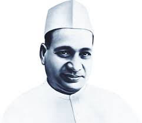
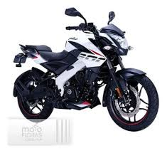
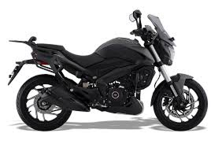

Historia de Bajaj
La historia de Bajaj Auto Ltd. comienza en India en 1945, cuando Jamnalal Bajaj fundó la compañía con el objetivo de fabricar y distribuir vehículos de bajo costo para el pueblo indio. En sus primeros años, Bajaj se dedicaba principalmente a importar y ensamblar scooters Vespa, pero con el tiempo comenzó a producir sus propios modelos bajo licencia y, más tarde, con ingeniería totalmente propia. A partir de la década de 1960, la empresa creció de manera constante, convirtiéndose en una de las marcas más importantes de motocicletas y vehículos de tres ruedas (rickshaws) del país. Su enfoque siempre fue claro: movilidad accesible, eficiente y duradera para millones de personas.

En los años 80 y 90, Bajaj comenzó a modernizar su tecnología y diseño, lo que le permitió competir directamente con marcas japonesas como Honda, Yamaha y Suzuki. El lanzamiento del Bajaj Chetak, un scooter inspirado en la Vespa pero fabricado completamente en India, marcó un hito en la historia de la movilidad urbana. Luego, en 2001, la marca revolucionó el mercado con la llegada de la Bajaj Pulsar, una moto deportiva de bajo costo pero alto rendimiento, que cambió para siempre la imagen de Bajaj. La Pulsar introdujo tecnologías como el encendido digital (DTS-i) y el diseño musculoso, posicionando a Bajaj como una marca joven y deportiva.
En Argentina, Bajaj desembarcó oficialmente en 2008, y rápidamente se asoció con Corven Motors para el ensamblaje y distribución de sus motos en el país. Esto permitió adaptar sus modelos a las necesidades del mercado local, con una excelente relación entre prestaciones, durabilidad y precio.
En la actualidad, Bajaj continúa creciendo y evolucionando. Es considerada una de las marcas de motos más grandes del mundo, con presencia en decenas de países y una producción anual significativa. Su línea moderna incluye modelos como la Pulsar N250, la Dominar 400, la NS160 y la nueva Boxer BM150, combinando rendimiento, economía de combustible y durabilidad. Además, Bajaj trabaja activamente en el desarrollo de motos eléctricas, como la Bajaj Chetak EV, su primer scooter completamente eléctrico, que marca el inicio de una nueva etapa más limpia y sostenible.